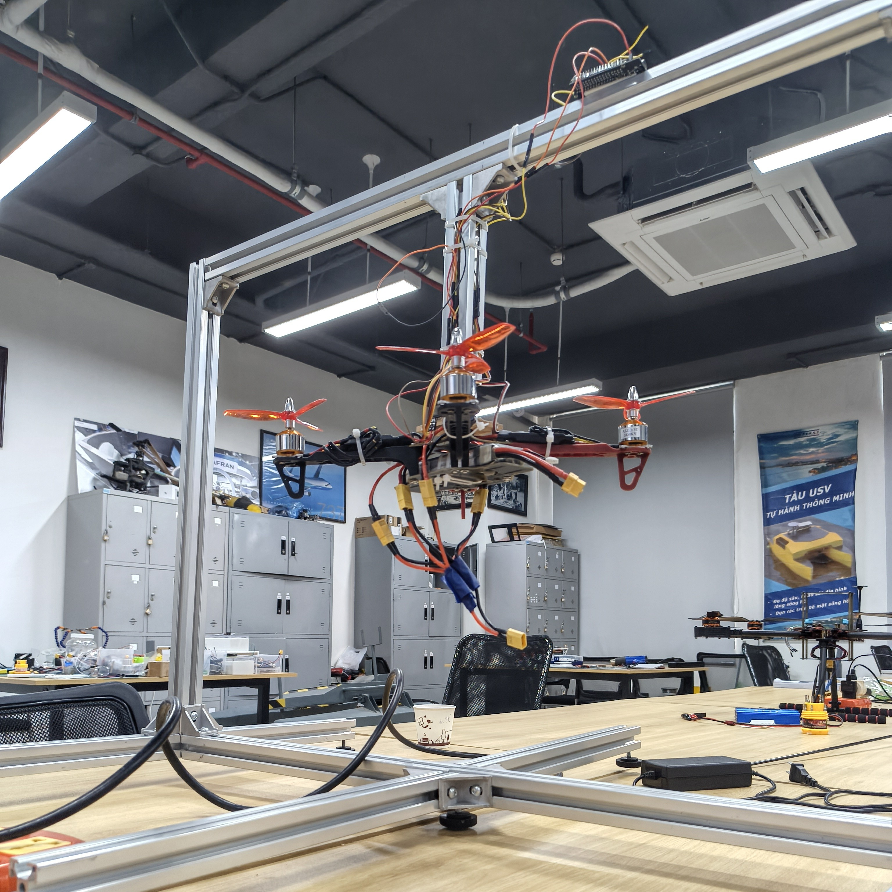
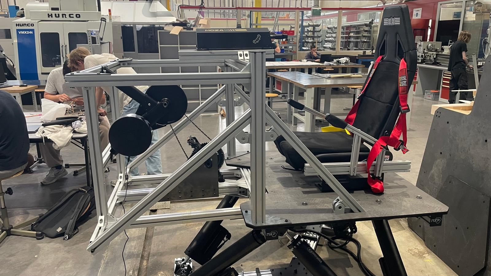
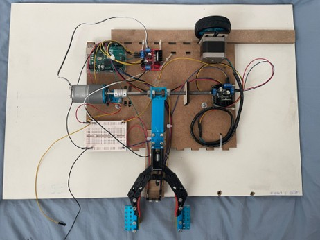
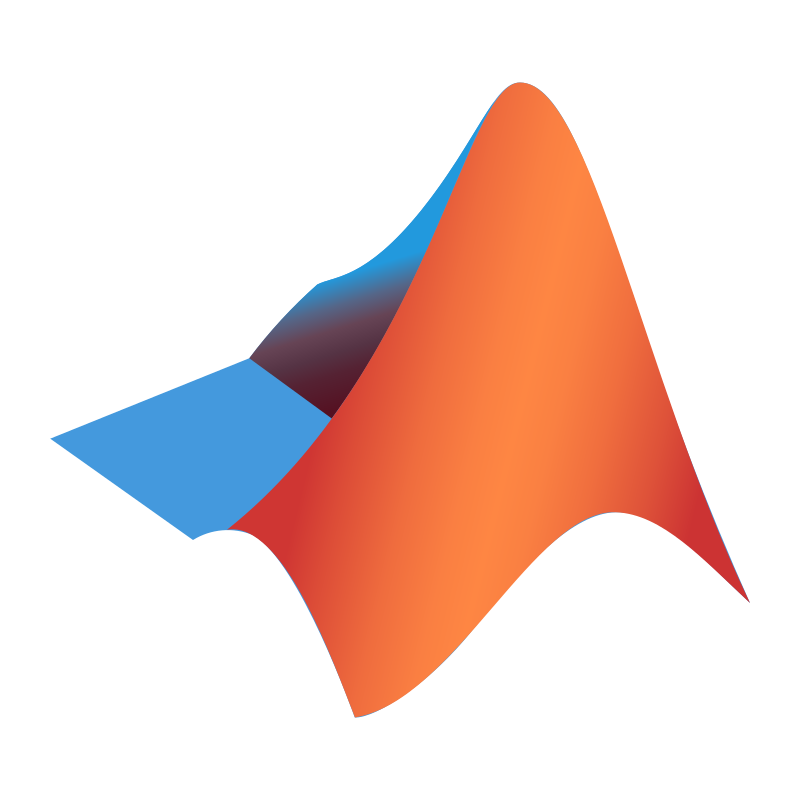
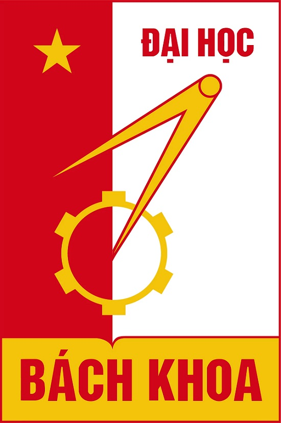
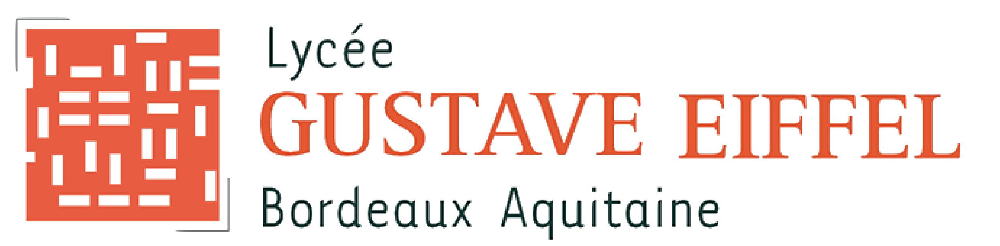

01 / CAO & MÉCANIQUE
Conception & Modélisation 3D
CATIA V5, 3DEXPERIENCE, mises en plan 2D, cotation ISO, dossiers de fabrication.
03 / Projets Sélectionnés
Cliquez sur un projet pour ouvrir la galerie et les détails.

Modèle 6 DDL, Van Loan, solveur Active-Set temps réel et benchmark (PID, LQR, MPC).

Conception CATIA V5, boîtier usiné, télémétrie BLE/SimConnect MSFS 2020.

Robot autonome sur glissière à billes, détection TCS3200 et Arduino Uno.

CAO paramétrique, FEA ANSYS, PyMechanical, impression 3D TPU et essais.
04 / Compétences & Outils

MATLAB Simulink / Onramp Python
Simulation & Scripts
Python
Simulation & Scripts
 CATIA
CAO 3D & Plans 2D
CATIA
CAO 3D & Plans 2D
 ANSYS
FEA & PyMechanical
ANSYS
FEA & PyMechanical
 SQL
Bases de données
SQL
Bases de données
Rédaction de cahiers des charges, tolérancement et respect des jalons.
Mobilité 5 mois au Vietnam (HUST) & Co-présidence International Team.
Encadrement d'équipe et pilotage budgétaire à la SIGMA Boutique.
Coopération fluide entre mécaniciens, automaticiens et informaticiens.
07 / Parcours

Diplôme d'ingénieur en Mécanique · Spécialité Machines, Robots et Systèmes (MRS).

Stage Assistant Ingénieur R&D (5 mois) · Modélisation 6 DDL & Commande MPC / LQR.

Classes Préparatoires aux Grandes Écoles (CPGE) · PTSI / PT.